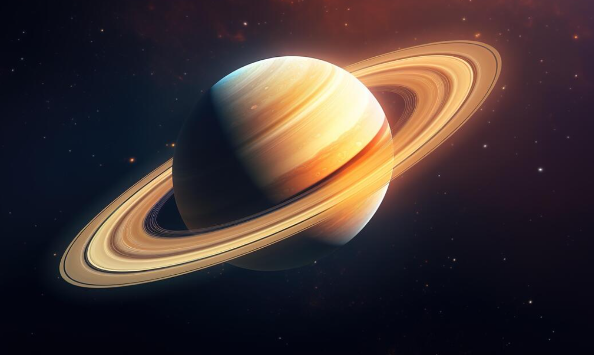

Saturn
Saturn is the sixth planet from the Sun and is best known for its beautiful ring system. It is a gas giant made mostly of hydrogen and helium, similar to Jupiter.
Saturn`s rings are made up of ice and rock particles and are one of the most spectacular features in our solar system. The planet has many moons, with Titan being the largest and one of the most interesting to scientists.

Facts About Saturn
- Saturn is the second largest planet in the solar system.
- It has a large and visible ring system made of ice and rock.
- Saturn has more than 80 known moons.
- It is a gas giant with no solid surface.
- A day on Saturn lasts about 10.7 hours.